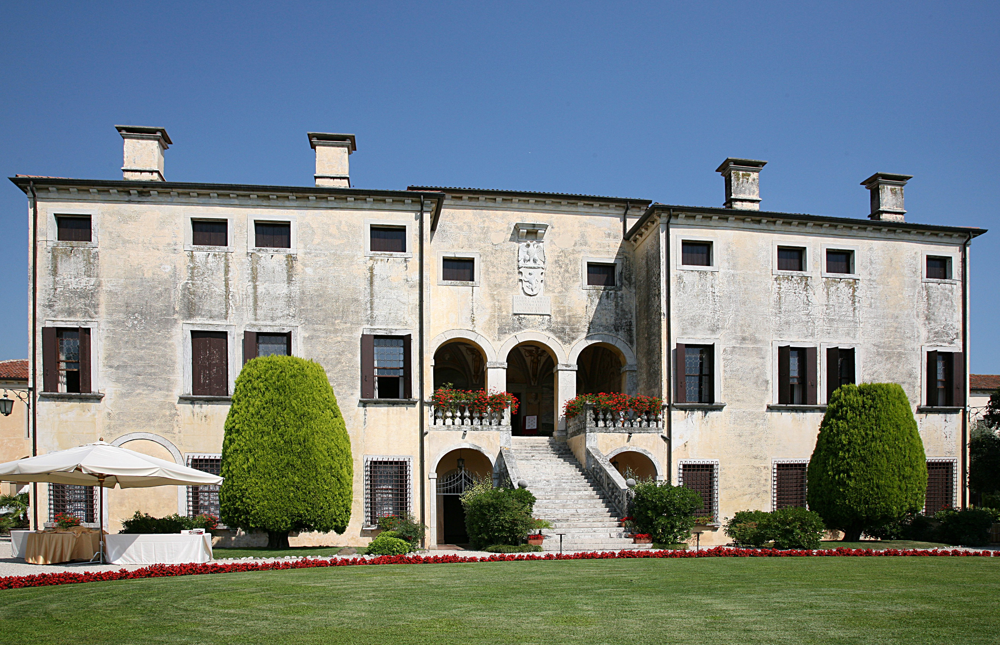
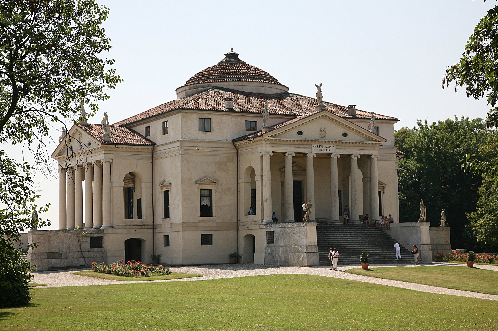
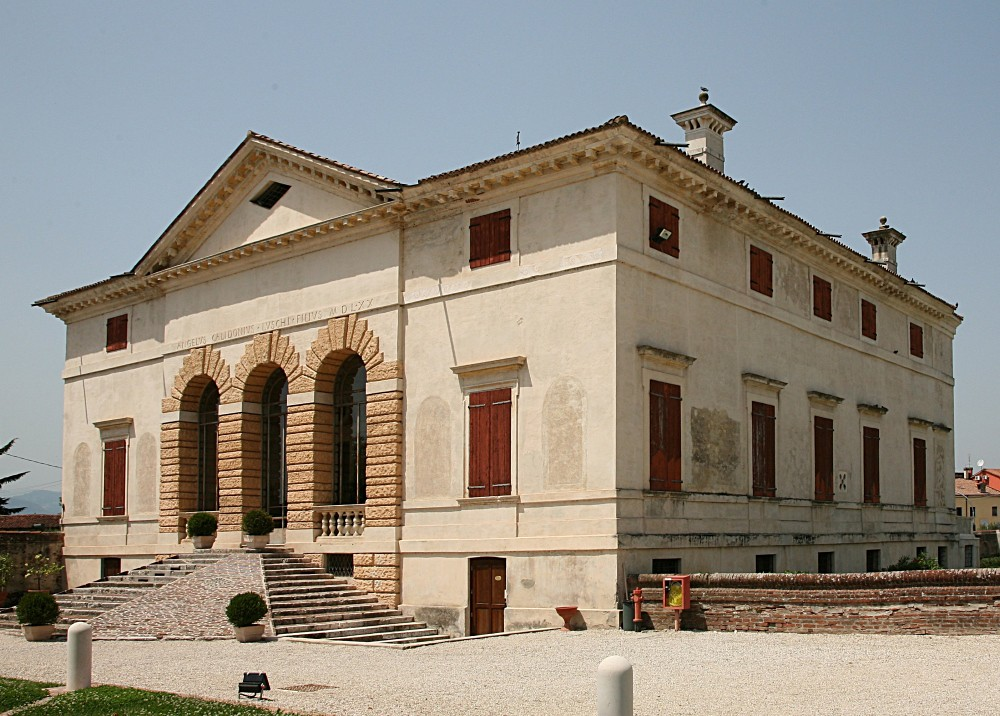
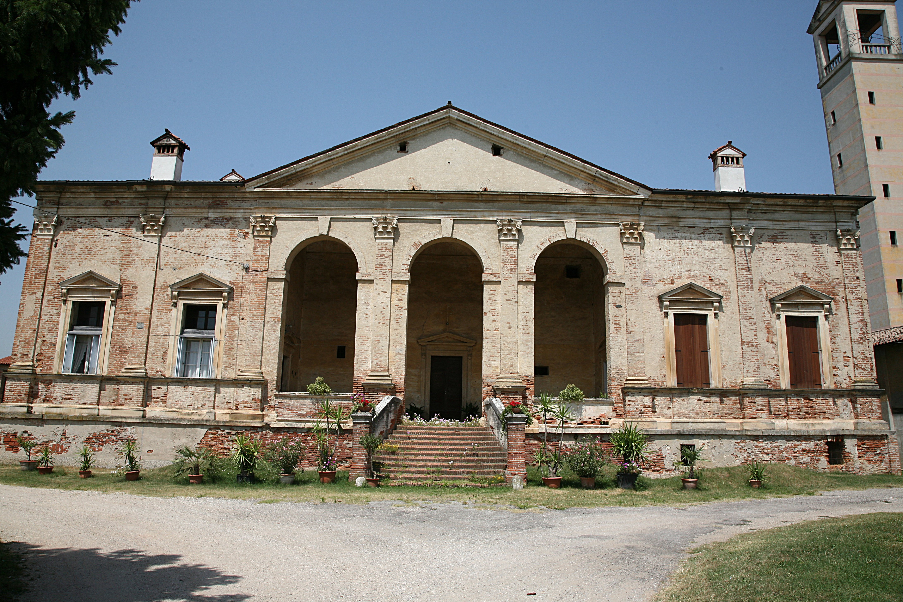
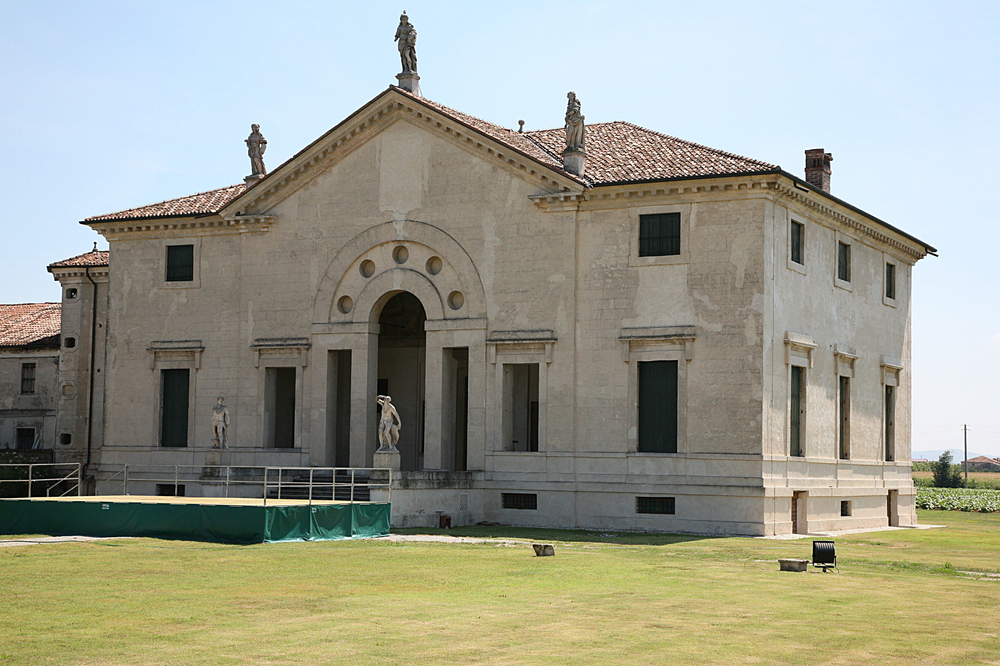
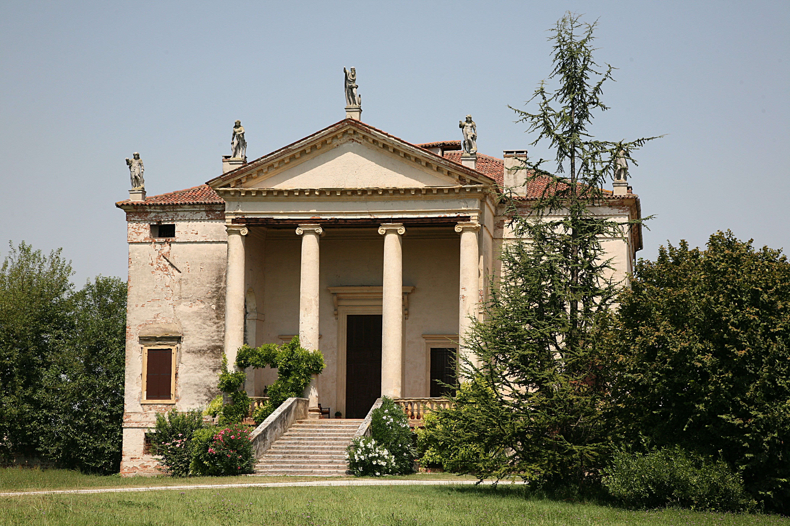
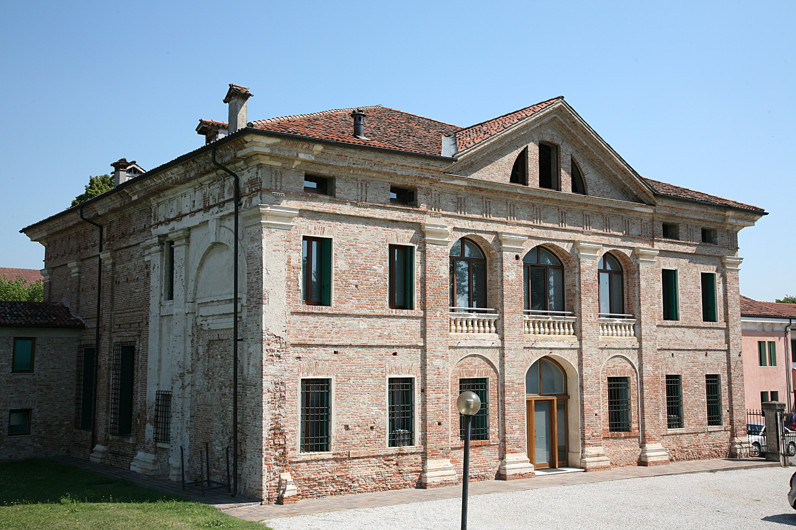
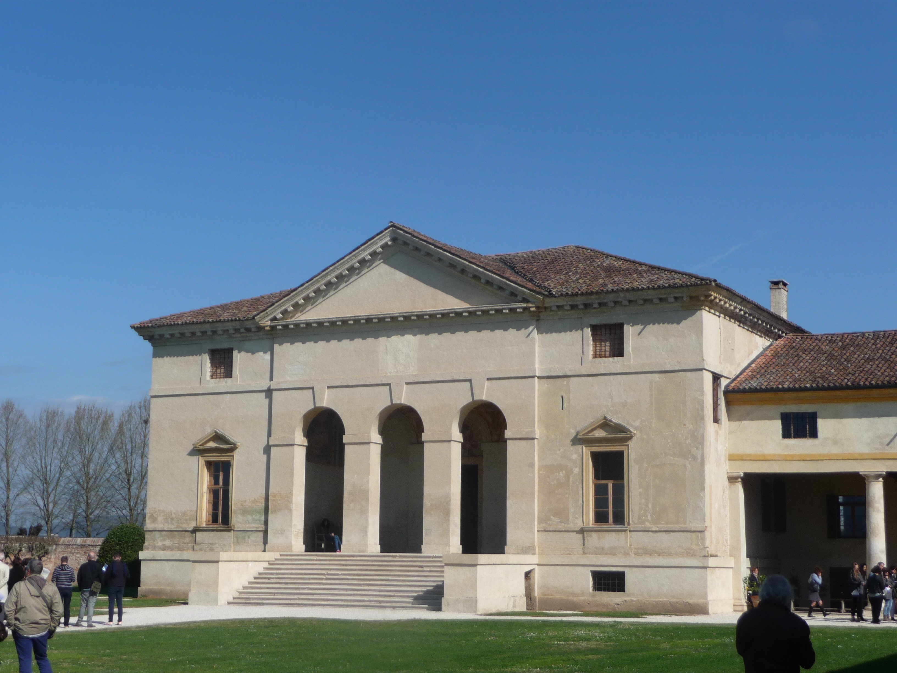
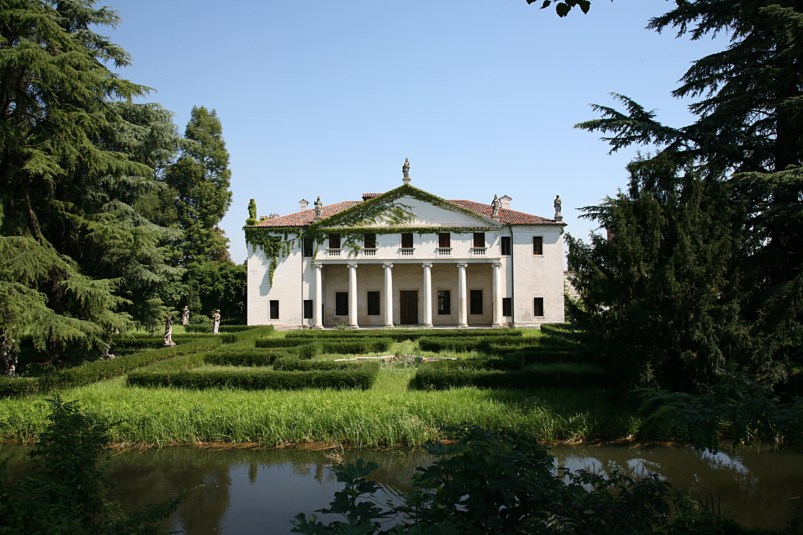
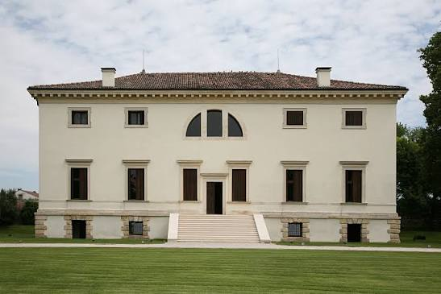

Villa Godi
Luogo: Lugo di Vicenza
Data di costruzione: 1539-1557
Committente: Girolamo, Pietro e Marcantonio Godi
Uso attuale: residenza privata, casa museo, location per eventi
Esplora la villa
Nella seconda metà del XVI secolo, su commissione di nobili famiglie vicentine, Andrea Palladio progettò molte ville destinate a residenza privata. Nelle sue architetture si possono riconoscere alcune caratteristiche ricorrenti: innanzitutto l'uso di elementi della tradizione greco-romana, come i maestosi capizzali a forma di tempio classico con colonne e frontoni geometrici. Inoltre, gli interni sono governati da una rigorosa simmetria e da precise proporzioni matematiche, che mirano a creare un'armonia visiva assoluta. Infine, queste dimore non erano solo residenze di lusso, ma veri e propri centri produttivi perfettamente integrati nel paesaggio agricolo circostante. Oggi, questo straordinario patrimonio architettonico è tutelato dall'UNESCO come Patrimonio dell'Umanità.

Luogo: Lugo di Vicenza
Data di costruzione: 1539-1557
Committente: Girolamo, Pietro e Marcantonio Godi
Uso attuale: residenza privata, casa museo, location per eventi
Esplora la villa
Luogo: Vicenza
Data di costruzione: 1567-1605
Committente: Paolo Almerico
Uso attuale: residenza privata, aperta al pubblico in precisi orari
Esplora la villa
Luogo: Caldogno
Data di costruzione: 1543-1570 circa
Committente: Losco Caldogno
Uso attuale: polo culturale aperto al pubblico
Esplora la villa
Luogo: Vicenza
Data di costruzione: 1542-1555 circa
Committente: Taddeo Gazzotti
Uso attuale: residenza privata, visitabile su appuntamento
Esplora la villa
Luogo: Pojana Maggiore
Data di costruzione: 1549 - 1563
Committente: Bonifacio Pojana
Uso attuale: aperta al pubblico
Esplora la villa
Luogo: Grumolo delle Abbadesse
Data di costruzione: 1555 circa-1584
Committente: Giovanni Chiericati
Uso attuale: residenza privata, visitabile su appuntamento
Esplora la villa
Luogo: Quinto Vicentino
Data di costruzione: 1542-1550 circa
Committente: Marcantonio e Adriano Thiene
Uso attuale: sede del municipio
Esplora la villa
Luogo: Agugliaro
Data di costruzione: 1548-1555 circa
Committente: Biagio Saraceno
Uso attuale: casa per ferie, visitabile dal pubblico
Esplora la villa
Luogo: Bolzano Vicentino
Data di costruzione: 1539-1587
Committente: Gianfrancesco Valmarana
Uso attuale: residenza privata, non visitabile
Esplora la villa
Luogo: Bagnolo di Lonigo
Data di costruzione: 1542 - 1545
Committente: Fratelli Pisani
Uso attuale: residenza privata, hotel e ristorante
Esplora la villa